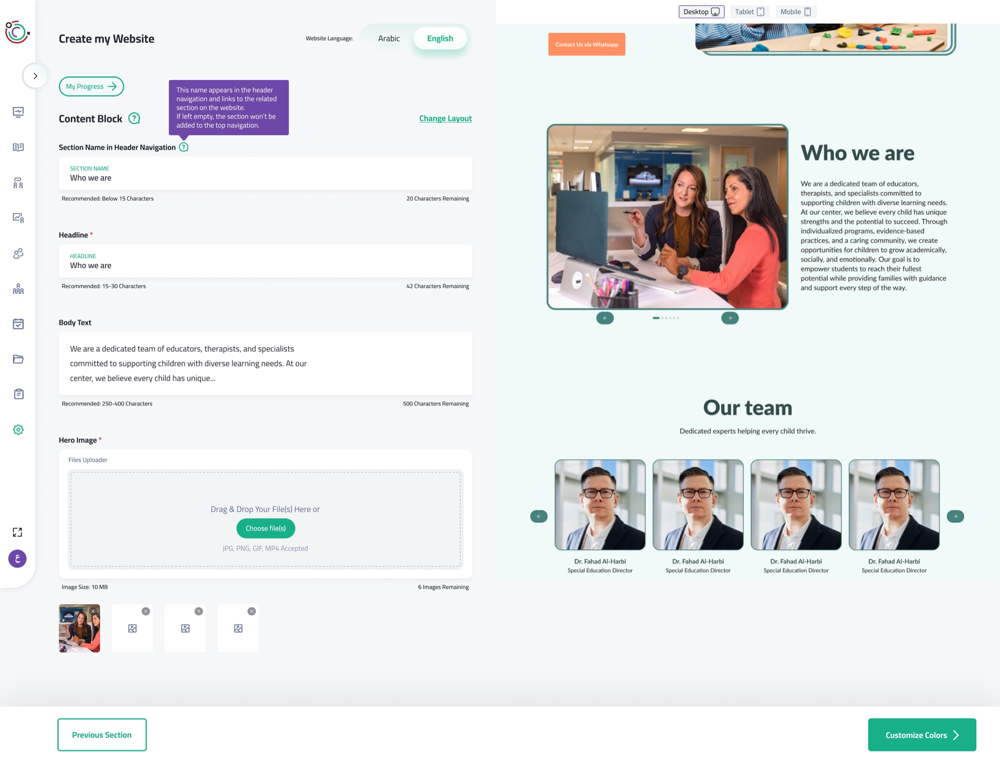
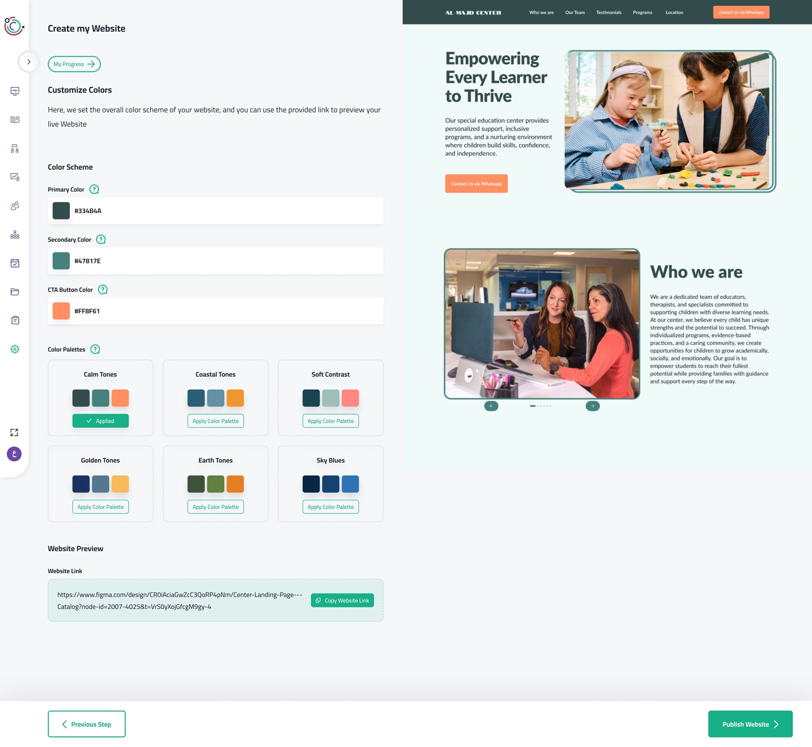
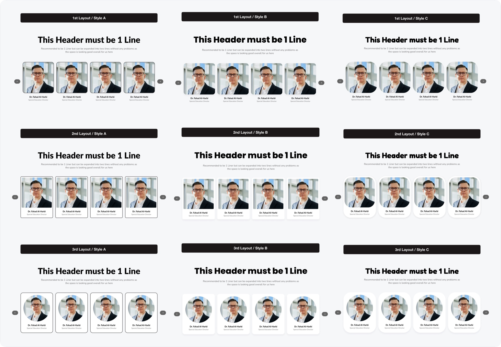
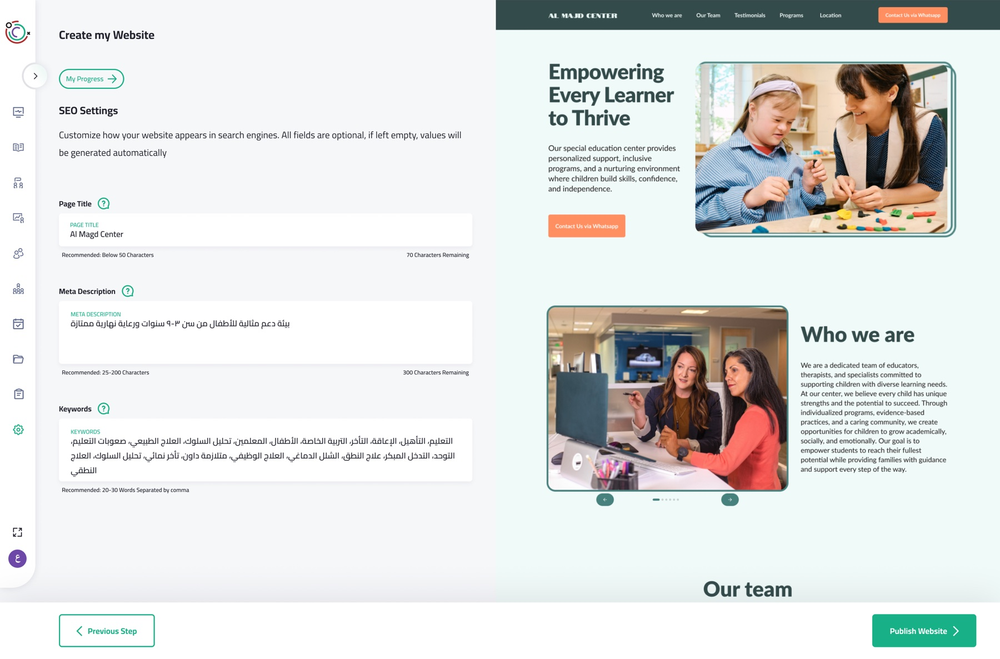

Case study · Ynmo · Web
98+ daycare and center owners with no technical background built and published their own website with a guided builder I designed at Ynmo.
Company
Ynmo, daycare SaaS in the GCC
Role
Product Designer, end-to-end flow
Team
Me, 2 front-end developers, 1 PM
Timeline
4 months
Method
UX principles, feasibility checks with developers
Ynmo was moving to list centers in a marketplace where parents compare them. But most centers had no website to show what makes them different, and their owners had no technical background to build one.
The goal: any owner, whatever their technical skill, can publish a site that shows what their center stands for, without help.
What shaped the design
I had no access to owners, so each decision follows an established UX principle and was checked with the developers.
01 · Visibility of system status
A live preview next to the form, switching between desktop, tablet and mobile.
Why: owners see every change the moment they make it, with no guessing and no publishing to check.
02 · Recognition rather than recall
Every field starts with real example content, so owners understand what it’s for.
Why: an example shows owners what good looks like; a blank field shows them nothing.

03 · Error prevention
Owners start from ready-made palettes and can change any color except the background.
Why: less risk of unreadable text, while every site still feels like their own.

04 · Consistency and standards
Every section comes in 3 layouts × 3 styles: minimal, modern and fun.
Why: real choice for owners, and a known set for the 2 developers to build and maintain.

05 · Help in context
Every section and setting explains what it is and why visitors need it, right where owners use it.
Why: owners can finish their site without a help center or a support call.

websites built and published by owners with no technical background.
What worked
Designing for what owners can’t do (write, choose colors, understand SEO) instead of adding more options.
What I’d do differently